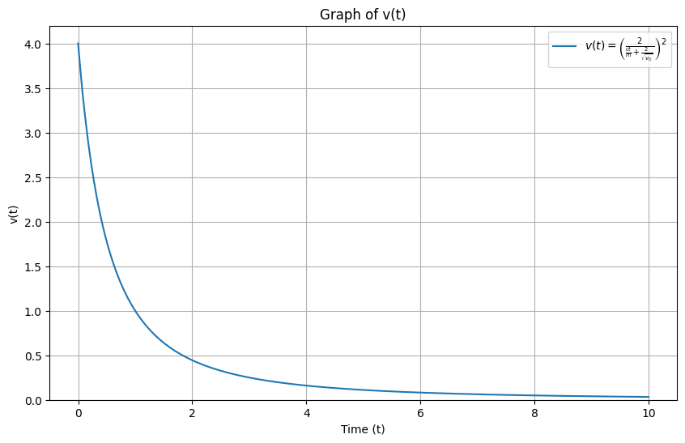
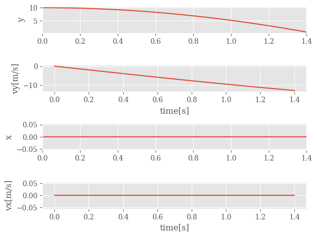
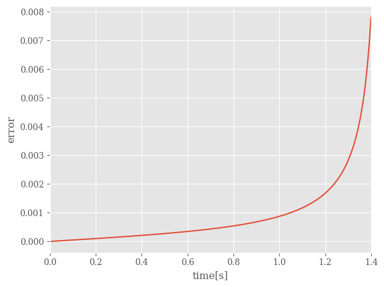

Solution Homework 3#
Spring 2025
Exercise 1 (20 pt), Electron moving into an electric field#
An electron is sent through a varying electrical field. Initially, the electron is moving in the \(x\)-direction with a velocity \(v_x = 100\) m/s. The electron enters the field when it passes the origin. The field varies with time, causing an acceleration of the electron that varies in time
1a (4pt) Find the velocity as a function of time for the electron.
SOLUTION
The electron is moving in the \(x\)-direction, but experiences an acceleration in the \(y\)-direction. The velocity in the \(x\)-direction is therefore constant, while the velocity in the \(y\)-direction is given by an integral over the acceleration:
Thus, the velocity vector is given by:
1b (4pt) Find the position as a function of time for the electron.
SOLUTION
The position is given by an integral over the velocity. We can treat the \(x\)- and \(y\)-components separately, since they are independent in this case:
So that the position vector is given by:
The field is only acting inside a box of length \(L = 2m\).
1c (4pt) For how long time is the electron inside the field?
SOLUTION
While the electron is inside the field, the location is given by the expression above. The electron enters the field at \(t=0\), and leaves the field at \(t=t_f\).
Let’s assume that \(L\) is the \(x\) length of the box, so that the electron enters the field at \(x=0\) and leaves the field at \(x=L\). We can then find the time \(t_f\) by solving the equation \(x(t_f) = L\).
The reason we choose to solve for \(x(t_f)\) is that motion in that direction is a result of constant velocity, so that \(x(t) = v_x t\).
1d (4pt) What is the displacement in the \(y\)-direction when the electron leaves the box. (We call this the deflection of the electron).
SOLUTION
The deflection of the electron is given by the difference in the \(y\)-component of the position vector at \(t=t_f\) and \(t=0\). Here we assume that the electron enters the field at \(y=0\), which is already captured in the expression for \(y(t)\) above.
1e (4pt) Find the angle the velocity vector forms with the horizontal axis as the electron leaves the box.
SOLUTION
We’ve found the velocity vector above, and we know that the electron leaves the box at \(t=t_f\). So we can find the angle by taking the arctangent of the \(y\)-component divided by the \(x\)-component of the velocity vector:
or in degrees: \(\theta = -0.23^\circ\)
Exercise 2 (10 pt), Drag force#
We can observe that the models for linear and quadratic drag forces are given by:
where \(D\) is the “length scale” of the object (e.g., the diameter of the sphere), \(\eta\) is the viscosity of the fluid, \(\rho\) is the density of the fluid, \(A\) is the cross-sectional area of the object, and \(\kappa\) is a constant of order unity (larger for flat and blunt bodies; smaller for streamlined bodies).
2a (5pt) The Reynolds number is defined as \(Re = \rho v D / \eta\). What is the physical meaning of this number? For a spherical object, show that the ratio of the quadratic drag force to the linear drag force is given by \(f_{quad}/f_{lin} = Re/48\). Use this to explain the physical meaning of the Reynolds number. Note: you may assume that \(\kappa = 0.25\) for a sphere.
SOLUTION
For a spherical object, the cross-sectional area is \(A = \pi (D / 2)^2\). The ratio of the quadratic drag force to the linear drag force is then:
The value of \(\kappa\) is of order unity, but for a sphere is known to be \(\kappa_{sphere} = 0.25\). Thus,
where we used the definition of the Reynolds number.
The Reynolds number indicates the relative importance of the viscous forces (\(f_{lin}\)) to the inertial forces (\(f_{quad}\)). For low Reynolds numbers, the viscous forces dominate, and the fluid is said to be laminar. For high Reynolds numbers, the inertial forces dominate, and the fluid is said to be turbulent.
2b (2pt) Explain a situation where there would be a low Reynolds number. What about a high Reynolds number? Estimate the Reynolds number for a paramecium moving through water, a 1cm sphere drag through corn syrup, a falling rain drop, a parachutist, a car, and a plane.
SOLUTION
Low Reynolds number would be indicative of a slowly moving object in a viscous fluid, like dragging a marble through corn syrup. High Reynolds number would be indicative of a fast moving object in a low viscosity fluid, like a plane flying through air.
We can make some order of magnitude estimates for the Reynolds numbers of the objects listed:
Water has a density of \(\rho = 1000\;\mathrm{kg/m^3}\) and a viscosity around \(\eta = 10^{-3}\;\mathrm{Pa\,s}\).
Corn syrup has a density of around \(\rho = 1000\;\mathrm{kg/m^3}\) and a viscosity around \(\eta = 10^3\;\mathrm{Pa\,s}\).
Air has a density of \(\rho = 1.2\;\mathrm{kg/m^3}\) (we use 1) and a viscosity at room temp around \(\eta = 10^{-5}\;\mathrm{Pa\,s}\).
The speeds and sizes of the objects are estimated.
Object |
\(v\) (m/s) |
\(D\) (m) |
\(\rho\) (kg/m\(^3\)) |
\(\eta\) (Pa s) |
\(Re\) |
|---|---|---|---|---|---|
Paramecium |
0.001 |
0.0001 |
1000 |
\(10^{-3}\) |
\(10^{-1}\) |
Corn syrup |
0.01 |
0.01 |
1000 |
\(10^3\) |
\(10^{-4}\) |
Rain drop |
10 |
0.001 |
1 |
\(10^{-5}\) |
\(10^4\) |
Parachutist |
10 |
1 |
1 |
\(10^{-5}\) |
\(10^6\) |
Car |
30 |
2 |
1 |
\(10^{-5}\) |
\(10^7\) |
Plane |
250 |
20 |
1 |
\(10^{-5}\) |
\(10^8\) |
Here we just did order of magnitude calculations with the definitions of the Reynolds number \(Re = \rho v D / \eta\) and the values given in the table.
2c (3pt) Find another dimensionless number from fluid mechanics and explain its physical meaning. Make sure you consider high and low values of the number you find.
SOLUTION
Answers will vary.
Exercise 3 (10 pt), Falling object#
We have shown that an object that is dropped from rest and experiences linear drag force will reach a terminal velocity and do so exponentially:
3a (4pt) At first, the object will be moving slowly. Show that we can approximate this expression in that interval. We should find that \(v_y = gt\) – the standard result for free fall in vacuum. Demonstrate this.
SOLUTION
We can expand the exponential in a Taylor series:
It is important to note that this expansion is only valid for small \(x\). So we need a small dimensionless parameter to expand in. For us this is \(t/\tau\), for \(t<<\tau\), the expansion is useful and accurate.
Using this, we can write:
With \(v_{term} = g\tau\), we get:
Here \(\tau = m/\beta\) is the characteristic time scale for the motion, and \(v_{ter} = g\tau\) is the terminal velocity.
3b (3pt) What is the next term, \(O(t^2)\), in the expansion? What is the physical meaning of this term?
SOLUTION
From the earlier expansion, the next term would include:
With \(v_{term} = g\tau\) and \(\tau=m/\beta\), that second term alone (i.e., \(v_{y,2}(t)\)) becomes:
This term slows the object down, that is why it is negative. It scales with the drag, which is why it’s linear in \(\beta\). It also scales with the square of the time, which is why it’s quadratic in \(t\); this indicates that it becomes a more important influence to the motion as time goes on.
3c (4pt) The position of the object is given by: \(y(t) = v_{ter}t + (v_{y0}-v_{ter})\tau(1-e^{-t/\tau})\). Show that this reduces to the standard result \(y = \frac{1}{2}gt^2\) when \(v_{y0} = 0\). What is the small parameter in your expansions in all cases?
SOLUTION
When \(v_{y0} = 0\), we have the simpler expression:
We need to use the same small parameter \(t/\tau\) as before. We should organize the expression so that we can see that the expansion is valid for small \(t/\tau\):
We apply the same expansion as before:
Keeping up to quadratic terms in \(t/\tau\):
With \(v_{term} = g\tau\), we get:
Exercise 4 (10 pt), and now a theoretical exercise#
Finding and exploring equations of motion is the central enterprise of classical mechanics. You will encounter (and derive) many equations you have not seen before, and you will need to explain them. Consider a hypothetical one-dimensional system where a mass \(m\) has a speed of \(v_0\) and coasts along the x-axis. The surrounding medium produces a drag force that is modeled using:
When the force is a pure function of velocity, using the technique called separation of variables on Newton’s 2nd Law, we can find the velocity as a function of time:
We can separate variables and write:
Divide both sides by \(F(v)\) and multiply both sides by \(dt\):
And then, given starting (initial) conditions, we integrate both sides to find an expression for \(t\) as a function of \(v\).
4a (4pt) For the given force above, write the equation of motion in a form: \(\dfrac{m dv}{F(v)} = dt\). Integrate both sides to find an expression for the velocity \(v\) as a function of \(t\) (\(v(t)\) not \(t(v)\)).
SOLUTION
So we can start by writing this using Newton’s second law:
Such that:
Using the separation of variables technique, we can write:
We can integrate both sides with the known initial conditions \(v=v_0\) at \(t=0\):
which gives:
We can solve this for \(v(t)\):
So that,
4b (2pt) Check your answer by looking at the limits of its behavior. Does it agree with your intuition?
SOLUTION
At \(t=0\), we should have \(v=v_0\), which is the case. As \(t\rightarrow\infty\), we should have \(v\rightarrow 0\), which is also the case. Why? Because this is a resistive drag force, so the object will slow down and eventually stop.
4c (2pt) Sketch the expression and explain what the motion of the object looks like by interpreting this expression and your sketch.
SOLUTION
Initially, the object moves with a velocity \(v_0\). As time goes on, the velocity decreases, and the object eventually comes to rest. The shape of the curve in time follows a \(1/t^2\) behavior from the expression in part b. We can sketch that. Or below, we have written a little program to plot it. Here we choose \(c=1\), \(m=1\), and \(v_0=4\).python
import matplotlib.pyplot as plt
import numpy as np
# Constants
c = 1 # Just for illustration, the actual value depends on the specific problem
m = 1 # Same as above
v0 = 4 # A positive initial value for v0
# Time array
t = np.linspace(0, 10, 400)
# Function v(t)
v_t = (2 / (c * t / m + 2 / np.sqrt(v0)))**2
# Plot
plt.figure(figsize=(10, 6))
plt.plot(t, v_t, label=r"$v(t) = \left( \frac{2}{\frac{ct}{m} + \frac{2}{\sqrt{v_0}}} \right)^2$")
plt.xlabel('Time (t)')
plt.ylabel('v(t)')
plt.title('Graph of v(t)')
plt.ylim(bottom=0)
plt.grid(True)
plt.legend()
plt.show()
Show code cell source
import matplotlib.pyplot as plt
import numpy as np
# Constants
c = 1 # Just for illustration, the actual value depends on the specific problem
m = 1 # Same as above
v0 = 4 # A positive initial value for v0
# Time array
t = np.linspace(0, 10, 400)
# Function v(t)
v_t = (2 / (c * t / m + 2 / np.sqrt(v0)))**2
# Plot
plt.figure(figsize=(10, 6))
plt.plot(t, v_t, label=r"$v(t) = \left( \frac{2}{\frac{ct}{m} + \frac{2}{\sqrt{v_0}}} \right)^2$")
plt.xlabel('Time (t)')
plt.ylabel('v(t)')
plt.title('Graph of v(t)')
plt.ylim(bottom=0)
plt.grid(True)
plt.legend()
plt.show()

4d (2pt) Will the object ever come to rest?
SOLUTION
When does \(v(t) = 0\)?
That seems to happen when the numerator is zero, so that \(4m^2 v_0 = 0\). This happens when \(v_0 = 0\), which is the case when the object is initially at rest. So if the object is initially at rest, it will remain at rest.
But the only other way for this expression to be zero is if the denominator goes to infinity. This happens as \(t\rightarrow\infty\), so there’s no finite time in which this happens. So if the object is initially moving, it will never truly come to rest.
This result also aligns with our sketch in part c.
Exercise 5 (10 pt), back to a falling ball and preparing for the numerical exercise#
Useful material: Malthe-Sørenssen chapter 7.5 and Taylor chapter 2.4.
In this example we study the motion of an object subject to a constant force and a velocity dependent force. We will reuse the code we develop here in homework 4 for a position-dependent force.
Here we limit ourselves to a ball that is thrown from a height \(h\) above the ground with an initial velocity \(\boldsymbol{v}_0\) at time \(t=t_0\). We assume the air resistance is proportional to the square velocity. Together with the gravitational force these are the forces acting on our system.
Note
Due to the specific velocity dependence, we cannot find an analytical solution for motion in the \(x\) and \(y\) directions, see the discussion in Taylor after eq. (2.61).
In order to find an analytical solution we need to assume that the object is falling in the \(y\)-direction (negative direction) only.
The position of the ball as function of time is \(\boldsymbol{r}(t)\) where \(t\) is time. The position is measured with respect to a coordinate system with origin at the floor.
We assume we have an initial position \(\boldsymbol{r}(t_0)=h\boldsymbol{e}_y\) and an initial velocity \(\boldsymbol{v}_0=v_{x,0}\boldsymbol{e}_x+v_{y,0}\boldsymbol{e}_y\).
In this exercise we assume the system is influenced by the gravitational force
and an air resistance given by a square law
The analytical expressions for velocity and position as functions of time will be used to compare with the numerical results in exercise 6.
5a (3pt) Identify the forces acting on the ball and set up a diagram with the forces acting on the ball. Find the equation of motion for the falling ball. Do not limit to 1D yet!
SOLUTION
The forces acting on the ball are the gravitational force and the drag force. The equation of motion is given by Newton’s second law:
where \(\boldsymbol{F}_{net} = \boldsymbol{F}_{grav} + \boldsymbol{F}_{drag}\). We can write this as
or as the differential equation we are going to eventually solve:
5b (4pt) Assume now that the object is falling only in the \(y\)-direction (negative direction). Integrate the equation of motion from an initial time \(t_0\) to a final time \(t\) and find the velocity. Assume it is dropped from rest to simplify the mathematics. In Taylor equations (2.52) to (2.58) you will find a very good discussion of this.
SOLUTION
In 1d, our equation of motion is much simpler (positive \(y\) is up):
We saw that we can use separation of variables to solve problems with pure functions of \(v\):
Before we go further, let’s simply our notation. Notice that when \(a_y=0\), we have \(v_y=v_{term}=\sqrt{gm/D}\), so that we can write:
We now integrate both sides:
that integral on the right side is of this form:
Using this here,
So that,
5c (4pt) Find thereafter the position as function of time starting with an initial time \(t_0\). Find the time it takes to hit the floor. Here you will find it convenient to set the initial velocity in the \(y\)-direction to zero. Taylor equations (2.52)-(2.58) should contain all relevant information for solving this part as well.
SOLUTION
To find this we integrate the velocity expression we found in part b:
Fall from a height \(h\) with \(v_y(0)=0\):
Note: \(cosh(x) = cosh(-x)\), so that \(\ln(cosh(-x)) = \ln(cosh(x))\) and \(cosh(0) = 0\).
So the time to fall a distance \(h\) is:
We will use the above analytical results in our numerical calculations in exercise 6. The analytical solution in the \(y\)-direction only will serve as a test for our numerical solution. We don’t often know the solutions to our problems exactly, so we have to check them against things we do know.
Exercise 6 (40pt), Numerical elements, solving exercise 5 numerically#
This exercise should be handed in as a jupyter-notebook at D2L. Remember to write your name(s).
Last week we:
Gained more practice with plotting in Python
Became familiar with arrays and representing vectors with such objects
This week we will:
Learn and utilize Euler’s Method to find the position and the velocity
Compare analytical and computational solutions
Add additional forces to our model
%matplotlib inline
# let's start by importing useful packages we are familiar with
import numpy as np
import matplotlib.pyplot as plt
%matplotlib inline
We will choose the following values
mass \(m=0.2\) kg
accelleration (gravity) \(g=9.81\) m/s\(^{2}\).
initial position is the height \(h=2\) m
initial velocities \(v_{x,0}=v_{y,0}=10\) m/s
Can you find a reasonable value for the drag coefficient \(D\)? You need also to define an initial time and the step size \(\Delta t\). We can define the step size \(\Delta t\) as the difference between any two neighboring values in time (time steps) that we analyze within some range. It can be determined by dividing the interval we are analyzing, which in our case is time \(t_{\mathrm{final}}-t_0\), by the number of steps we are taking \((N)\). This gives us a step size \(\Delta t = \dfrac{t_{\mathrm{final}}-t_0}{N}\).
With these preliminaries we are now ready to plot our results from exercise 5.
6a (10pt) Set up arrays for time, velocity, acceleration and positions for the results from exercise 5. Define an initial and final time. Choose the final time to be the time when the ball hits the ground for the first time. Make a plot of the position and velocity as functions of time. Here you could set the initial velocity in the \(y\)-direction to zero and use the result from exercise 5. Else you need to try different initial times using the result from exercise 5 as a starting guess. It is not critical if you don’t reach the ground when the initial velocity in the \(y\)-direction is not zero.
We move now to the numerical solution of the differential equations as discussed in the lecture notes or Malthe-Sørenssen chapter 7.5. Let us remind ourselves about Euler’s Method.
Suppose we know \(f(t)\) and its derivative \(f'(t)\). To find \(f(t+\Delta t)\) at the next step, \(t+\Delta t\), we can consider the Taylor expansion:
\(f(t+\Delta t) = f(t) + \dfrac{(\Delta t)f'(t)}{1!} + \dfrac{(\Delta t)^2f''(t)}{2!} + ...\)
If we ignore the \(f''\) term and higher derivatives, we obtain
\(f(t+\Delta t) \approx f(t) + (\Delta t)f'(t)\).
This approximation is the basis of Euler’s method, and the Taylor expansion suggests that it will have errors of \(O(\Delta t^2)\). Thus, one would expect it to work better, the smaller the step size \(h\) that you use. In our case the step size is \(\Delta t\).
In setting up our code we need to
Define and obtain all initial values, constants, and time to be analyzed with step sizes as done above (you can use the same values)
Calculate the velocity using \(v_{i+1} = v_{i} + (\Delta t)*a_{i}\)
Calculate the position using \(pos_{i+1} = r_{i} + (\Delta t)*v_{i}\)
Calculate the new acceleration \(a_{i+1}\).
Repeat steps 2-4 for all time steps within a loop.
6b (20 pt) Write a code which implements Euler’s method and compute numerically and plot the position and velocity as functions of time for various values of \(\Delta t\). Comment your results.
6c (10pt) Compare your numerically obtained positions and velocities with the analytical results from exercise 5. In order to do this, you need to take out the motion in the \(x\)-direction. Comment again your results.
SOLUTION
# Exercise 6, hw3, brute force way with declaration of vx, vy, x and y
# Common imports
import numpy as np
import pandas as pd
from math import *
import matplotlib.pyplot as plt
import os
# Where to save the figures and data files
PROJECT_ROOT_DIR = "Results"
FIGURE_ID = "Results/FigureFiles"
DATA_ID = "DataFiles/"
if not os.path.exists(PROJECT_ROOT_DIR):
os.mkdir(PROJECT_ROOT_DIR)
if not os.path.exists(FIGURE_ID):
os.makedirs(FIGURE_ID)
if not os.path.exists(DATA_ID):
os.makedirs(DATA_ID)
def image_path(fig_id):
return os.path.join(FIGURE_ID, fig_id)
def data_path(dat_id):
return os.path.join(DATA_ID, dat_id)
def save_fig(fig_id):
plt.savefig(image_path(fig_id) + ".png", format='png')
# Output file
outfile = open(data_path("Eulerresults.dat"),'w')
from pylab import plt, mpl
plt.style.use('ggplot')
mpl.rcParams['font.family'] = 'serif'
g = 9.80655 #m/s^2
# The mass and the drag constant D
D = 0.00245 #mass/length kg/m
m = 0.2 #kg, mass of falling object
DeltaT = 0.001
#set up arrays
tfinal = 1.4
# set up number of points for all variables
n = ceil(tfinal/DeltaT)
# define scaling constant vT used in analytical solution
vT = sqrt(m*g/D)
# set up arrays for t, a, v, and y and arrays for analytical results
#brute force setting up of arrays for x and y, vx, vy, ax and ay
t = np.zeros(n)
vy = np.zeros(n)
y = np.zeros(n)
vx = np.zeros(n)
x = np.zeros(n)
yanalytic = np.zeros(n)
# Initial conditions, note that these correspond to an object falling in the y-direction only.
vx[0] = 0.0 #m/s
vy[0] = 0.0 #m/s
y[0] = 10.0 #m
x[0] = 0.0 #m
yanalytic[0] = y[0]
# Start integrating using Euler's method
for i in range(n-1):
# expression for acceleration, note the absolute value and division by mass
ax = -D*vx[i]*sqrt(vx[i]**2+vy[i]**2)/m
ay = -g - D*vy[i]*sqrt(vx[i]**2+vy[i]**2)/m
# update velocity and position
vx[i+1] = vx[i] + DeltaT*ax
x[i+1] = x[i] + DeltaT*vx[i]
vy[i+1] = vy[i] + DeltaT*ay
y[i+1] = y[i] + DeltaT*vy[i]
# update time to next time step and compute analytical answer
t[i+1] = t[i] + DeltaT
yanalytic[i+1] = y[0]-(vT*vT/g)*log(cosh(g*t[i+1]/vT))+vy[0]*t[i+1]
if ( y[i+1] < 0.0):
break
data = {'t[s]': t,
'Relative error in y': abs((y-yanalytic)/yanalytic),
'vy[m/s]': vy,
'x[m]': x,
'vx[m/s]': vx
}
NewData = pd.DataFrame(data)
err=NewData['Relative error in y']
display(NewData)
# save to file
NewData.to_csv(outfile, index=False)
#then plot
fig, axs = plt.subplots(4, 1)
axs[0].plot(t, y)
axs[0].set_xlim(0, tfinal)
axs[0].set_ylabel('y')
axs[1].plot(t, vy)
axs[1].set_ylabel('vy[m/s]')
axs[1].set_xlabel('time[s]')
axs[2].plot(t, x)
axs[2].set_xlim(0, tfinal)
axs[2].set_ylabel('x')
axs[3].plot(t, vx)
axs[3].set_ylabel('vx[m/s]')
axs[3].set_xlabel('time[s]')
fig.tight_layout()
save_fig("EulerIntegration")
plt.show()
fig2, axs2 = plt.subplots(1,1)
axs2.plot(t, err)
axs2.set_xlim(0, tfinal)
axs2.set_ylabel('error')
axs2.set_xlabel('time[s]')
fig2.tight_layout()
save_fig("ErrorEuler")
plt.show()
Show code cell source
# Exercise 6, hw3, brute force way with declaration of vx, vy, x and y
# Common imports
import numpy as np
import pandas as pd
from math import *
import matplotlib.pyplot as plt
import os
# Where to save the figures and data files
PROJECT_ROOT_DIR = "Results"
FIGURE_ID = "Results/FigureFiles"
DATA_ID = "DataFiles/"
if not os.path.exists(PROJECT_ROOT_DIR):
os.mkdir(PROJECT_ROOT_DIR)
if not os.path.exists(FIGURE_ID):
os.makedirs(FIGURE_ID)
if not os.path.exists(DATA_ID):
os.makedirs(DATA_ID)
def image_path(fig_id):
return os.path.join(FIGURE_ID, fig_id)
def data_path(dat_id):
return os.path.join(DATA_ID, dat_id)
def save_fig(fig_id):
plt.savefig(image_path(fig_id) + ".png", format='png')
# Output file
outfile = open(data_path("Eulerresults.dat"),'w')
from pylab import plt, mpl
plt.style.use('ggplot')
mpl.rcParams['font.family'] = 'serif'
g = 9.80655 #m/s^2
# The mass and the drag constant D
D = 0.00245 #mass/length kg/m
m = 0.2 #kg, mass of falling object
DeltaT = 0.001
#set up arrays
tfinal = 1.4
# set up number of points for all variables
n = ceil(tfinal/DeltaT)
# define scaling constant vT used in analytical solution
vT = sqrt(m*g/D)
# set up arrays for t, a, v, and y and arrays for analytical results
#brute force setting up of arrays for x and y, vx, vy, ax and ay
t = np.zeros(n)
vy = np.zeros(n)
y = np.zeros(n)
vx = np.zeros(n)
x = np.zeros(n)
yanalytic = np.zeros(n)
# Initial conditions, note that these correspond to an object falling in the y-direction only.
vx[0] = 0.0 #m/s
vy[0] = 0.0 #m/s
y[0] = 10.0 #m
x[0] = 0.0 #m
yanalytic[0] = y[0]
# Start integrating using Euler's method
for i in range(n-1):
# expression for acceleration, note the absolute value and division by mass
ax = -D*vx[i]*sqrt(vx[i]**2+vy[i]**2)/m
ay = -g - D*vy[i]*sqrt(vx[i]**2+vy[i]**2)/m
# update velocity and position
vx[i+1] = vx[i] + DeltaT*ax
x[i+1] = x[i] + DeltaT*vx[i]
vy[i+1] = vy[i] + DeltaT*ay
y[i+1] = y[i] + DeltaT*vy[i]
# update time to next time step and compute analytical answer
t[i+1] = t[i] + DeltaT
yanalytic[i+1] = y[0]-(vT*vT/g)*log(cosh(g*t[i+1]/vT))+vy[0]*t[i+1]
if ( y[i+1] < 0.0):
break
data = {'t[s]': t,
'Relative error in y': abs((y-yanalytic)/yanalytic),
'vy[m/s]': vy,
'x[m]': x,
'vx[m/s]': vx
}
NewData = pd.DataFrame(data)
err=NewData['Relative error in y']
display(NewData)
# save to file
NewData.to_csv(outfile, index=False)
#then plot
fig, axs = plt.subplots(4, 1)
axs[0].plot(t, y)
axs[0].set_xlim(0, tfinal)
axs[0].set_ylabel('y')
axs[1].plot(t, vy)
axs[1].set_ylabel('vy[m/s]')
axs[1].set_xlabel('time[s]')
axs[2].plot(t, x)
axs[2].set_xlim(0, tfinal)
axs[2].set_ylabel('x')
axs[3].plot(t, vx)
axs[3].set_ylabel('vx[m/s]')
axs[3].set_xlabel('time[s]')
fig.tight_layout()
save_fig("EulerIntegration")
plt.show()
fig2, axs2 = plt.subplots(1,1)
axs2.plot(t, err)
axs2.set_xlim(0, tfinal)
axs2.set_ylabel('error')
axs2.set_xlabel('time[s]')
fig2.tight_layout()
save_fig("ErrorEuler")
plt.show()
| t[s] | Relative error in y | vy[m/s] | x[m] | vx[m/s] | |
|---|---|---|---|---|---|
| 0 | 0.000 | 0.000000e+00 | 0.000000 | 0.0 | 0.0 |
| 1 | 0.001 | 4.903277e-07 | -0.009807 | 0.0 | 0.0 |
| 2 | 0.002 | 9.806568e-07 | -0.019613 | 0.0 | 0.0 |
| 3 | 0.003 | 1.470988e-06 | -0.029420 | 0.0 | 0.0 |
| 4 | 0.004 | 1.961324e-06 | -0.039226 | 0.0 | 0.0 |
| ... | ... | ... | ... | ... | ... |
| 1395 | 1.395 | 7.296969e-03 | -12.706056 | 0.0 | 0.0 |
| 1396 | 1.396 | 7.417356e-03 | -12.713885 | 0.0 | 0.0 |
| 1397 | 1.397 | 7.541724e-03 | -12.721712 | 0.0 | 0.0 |
| 1398 | 1.398 | 7.670274e-03 | -12.729536 | 0.0 | 0.0 |
| 1399 | 1.399 | 7.803222e-03 | -12.737357 | 0.0 | 0.0 |
1400 rows × 5 columns


Our error is not too bad, but it seems like it is growing over time. This is because the Euler method is a first order method, so the error is proportional to \(\Delta t\). We will need a better method to get more accurate results.